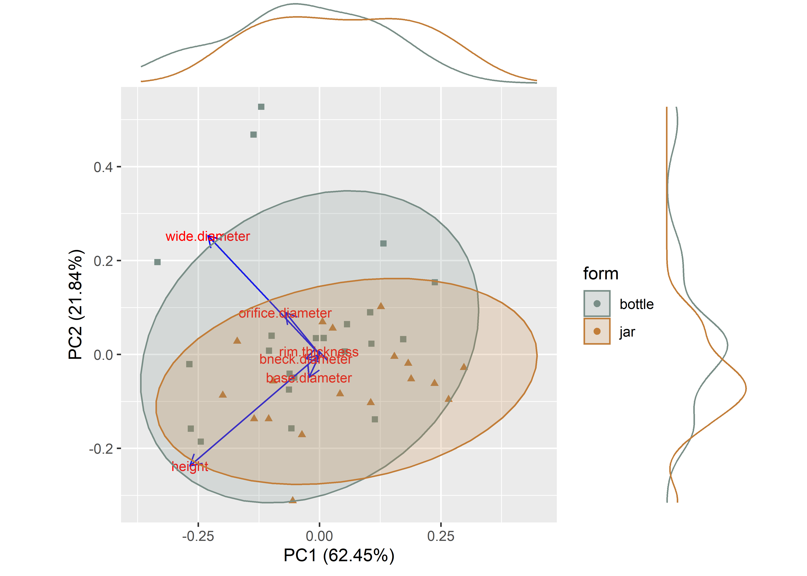
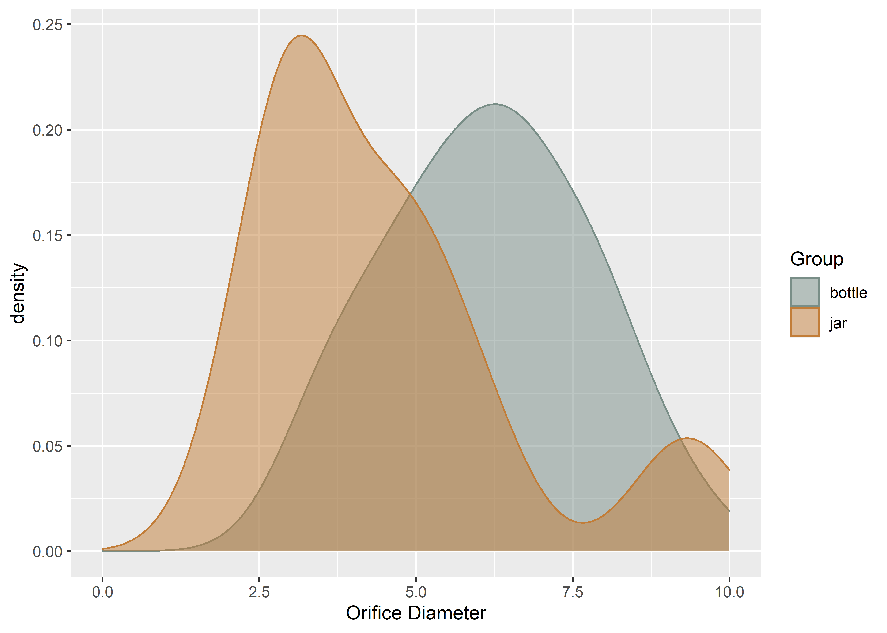
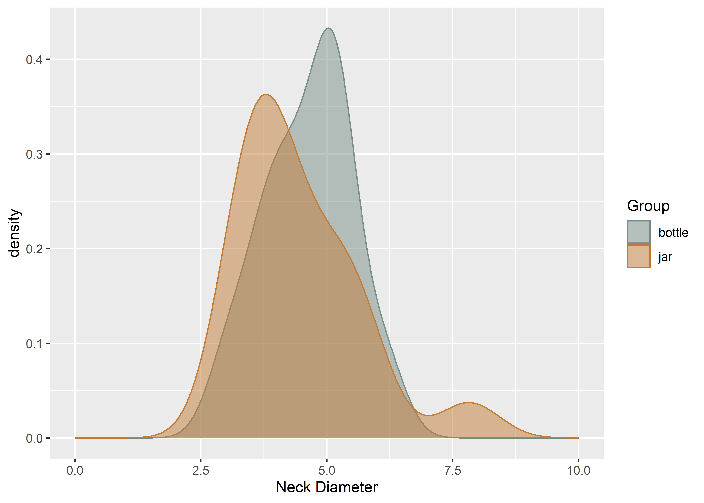
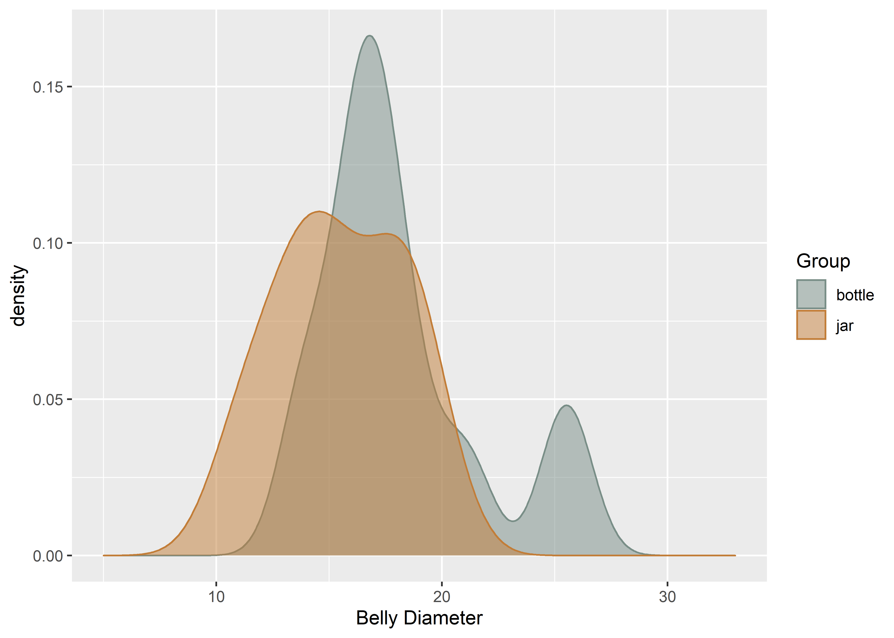
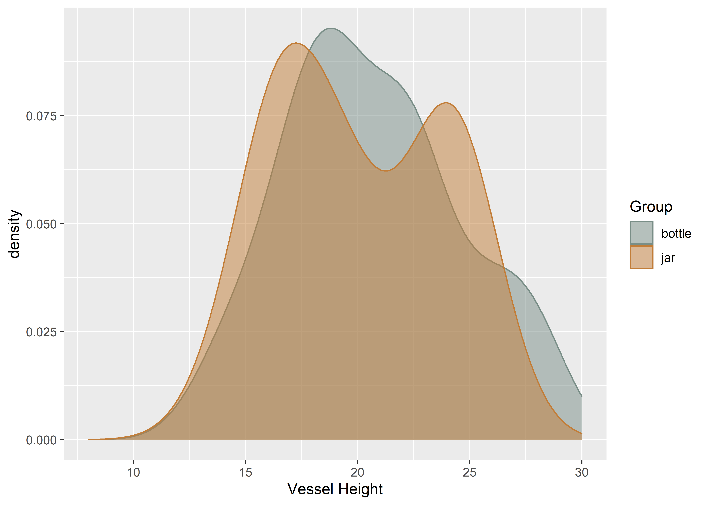

Chapter 1 Linear Chimú vessel metrics
# install required analysis packages
#devtools::install_github("tidyverse/tidyverse")
#devtools::install_github("mlcollyer/RRPP")
#devtools::install_github("kassambara/ggpubr")
#devtools::install_github('sinhrks/ggfortify')
# load libraries
library(tidyverse)
library(RRPP)
library(ggpubr)
library(ggfortify)
library(cluster)
library(wesanderson)1.1 Set working directory, load data, and define variables
# set working directory
setwd(getwd())
data <- read.csv("potmeas.csv", header = TRUE, as.is = TRUE)
# define variables
od <- data$orifice.diameter # orifice diameter
bd <- data$base.diameter # base diameter
nd <- data$neck.diameter # neck diameter
bl <- data$belly.diameter # belly diameter
h <- data$height # height
rt <- data$rim.thickness # rim thickness
gp <- data$group # anthropomorph, phytomorph, or zoomorph1.2 Boxplots for variable by group
# boxplot of orifice diameter ~ group
odgroup <- ggplot(data, aes(x = gp, y = od, color = gp)) +
geom_boxplot() +
geom_dotplot(binaxis = 'y',stackdir = 'center',dotsize = 0.3) +
scale_colour_manual(values = wes_palette("Moonrise2")) +
labs(x = "Group", y = "Orifice Diam") +
theme(legend.position = "none")
# boxplot of base diameter ~ group
bdgroup <- ggplot(data, aes(x = gp, y = bd, color = gp)) +
geom_boxplot() +
geom_dotplot(binaxis = 'y',stackdir = 'center',dotsize = 0.3) +
scale_colour_manual(values = wes_palette("Moonrise2")) +
labs(x = "Group", y = "Base Diam") +
theme(legend.position = "none")
# boxplot of neck diameter ~ group
ndgroup <- ggplot(data, aes(x = gp, y = nd, color = gp)) +
geom_boxplot() +
geom_dotplot(binaxis = 'y',stackdir = 'center',dotsize = 0.3) +
scale_colour_manual(values = wes_palette("Moonrise2")) +
labs(x = "Group", y = "Neck Diam") +
theme(legend.position = "none")
# boxplot of belly diameter ~ group
blgroup <- ggplot(data, aes(x = gp, y = bl, color = gp)) +
geom_boxplot() +
geom_dotplot(binaxis = 'y',stackdir = 'center',dotsize = 0.3) +
scale_colour_manual(values = wes_palette("Moonrise2")) +
labs(x = "Group", y = "Belly Diam") +
theme(legend.position = "none")
# boxplot of height ~ group
hgroup <- ggplot(data, aes(x = gp, y = h, color = gp)) +
geom_boxplot() +
geom_dotplot(binaxis = 'y',stackdir = 'center',dotsize = 0.3) +
scale_colour_manual(values = wes_palette("Moonrise2")) +
labs(x = "Group", y = "Height") +
theme(legend.position = "none")
# boxplot of rim thickness ~ group
rtgroup <- ggplot(data, aes(x = gp, y = rt, color = gp)) +
geom_boxplot() +
geom_dotplot(binaxis = 'y',stackdir = 'center',dotsize = 0.3) +
scale_colour_manual(values = wes_palette("Moonrise2")) +
labs(x = "Group", y = "Rim Thick") +
theme(legend.position = "none")
# render figure
sitefigure<-ggarrange(odgroup, bdgroup, ndgroup, blgroup, hgroup, rtgroup,
labels = c("a","b","c","d","e","f"),
ncol = 3, nrow = 2)## `stat_bindot()` using `bins = 30`. Pick better value with `binwidth`.
## `stat_bindot()` using `bins = 30`. Pick better value with `binwidth`.
## `stat_bindot()` using `bins = 30`. Pick better value with `binwidth`.
## `stat_bindot()` using `bins = 30`. Pick better value with `binwidth`.
## `stat_bindot()` using `bins = 30`. Pick better value with `binwidth`.
## `stat_bindot()` using `bins = 30`. Pick better value with `binwidth`.
Figure 1.1: Boxplots of orifice diameter, base diameter, neck diameter, belly diameter, height, and rim thickness for the anthropomorphic, phytomorphic, and zoomorphic Chimú vessels used in this study.
1.3 Principal Components Analysis for group
# set plot parameters to plot by group
df <- data[c(2:7)]
pch.gps.gp <- c(15,17,19)[as.factor(gp)]
col.gps.gp <- wes_palette("Moonrise2")[as.factor(gp)]
# plot pca
autoplot(stats::prcomp(df),
asp = 1,
data = data,
shape = pch.gps.gp,
colour = col.gps.gp)

Figure 1.2: Results of Principal Components Analysis for linear metrics associated with the Chimu vessels used in this study (gray squares, anthropomorphic; orange triangles, phytomorphic; tan circles, zoomorphic).
1.4 Density plots for variable ~ group
1.4.1 Orifice diameter ~ group
# density plot for orifice diameter by group
Group <- data$group
ggplot(data, aes(x = od, fill = Group, colour = Group)) +
geom_density(alpha = .5) +
scale_fill_manual(values = wes_palette("Moonrise2")) +
scale_colour_manual(values = wes_palette("Moonrise2")) +
xlim(0,10) +
labs(x = 'Orifice Diameter', y = 'density')

(#fig:density.gp.od)Density plot for orifice diameter by group.
1.4.2 Base diameter ~ group
# density plot for base diameter by group
ggplot(data, aes(x = bd, fill = Group, colour = Group)) +
geom_density(alpha = .5) +
scale_fill_manual(values = wes_palette("Moonrise2")) +
scale_colour_manual(values = wes_palette("Moonrise2")) +
xlim(0,7) +
labs(x = 'Base Diameter', y = 'density')(#fig:density.gp.bd)Density plot for base diameter by group.
1.4.3 Neck diameter ~ group
# density plot for neck diameter by group
ggplot(data, aes(x = nd, fill = Group, colour = Group)) +
geom_density(alpha = .5) +
scale_fill_manual(values = wes_palette("Moonrise2")) +
scale_colour_manual(values = wes_palette("Moonrise2")) +
xlim(0,10) +
labs(x = 'Neck Diameter', y = 'density')

(#fig:density.gp.nd)Density plot for neck diameter by group.
1.4.4 Belly diameter ~ group
# density plot for belly diameter by group
ggplot(data, aes(x = bl, fill = Group, colour = Group)) +
geom_density(alpha = .5) +
scale_fill_manual(values = wes_palette("Moonrise2")) +
scale_colour_manual(values = wes_palette("Moonrise2")) +
xlim(5,33) +
labs(x = 'Belly Diameter', y = 'density')

(#fig:density.gp.bl)Density plot for belly diameter by group.
1.4.5 Height ~ group
# density plot for height by group
ggplot(data, aes(x = h, fill = Group, colour = Group)) +
geom_density(alpha = .5) +
scale_fill_manual(values = wes_palette("Moonrise2")) +
scale_colour_manual(values = wes_palette("Moonrise2")) +
xlim(8,30) +
labs(x = 'Vessel Height', y = 'density')

(#fig:density.gp.h)Density plot for vessel height by group.
1.5 Analyses of Variance (ANOVA) for variable ~ group
1.5.1 ANOVA Orifice diameter ~ group
# anova = orifice diameter ~ group
gp.od <- lm.rrpp(od ~ gp, SS.type = "I", data = data, iter = 9999, print.progress = FALSE)
anova(gp.od)##
## Analysis of Variance, using Residual Randomization
## Permutation procedure: Randomization of null model residuals
## Number of permutations: 10000
## Estimation method: Ordinary Least Squares
## Sums of Squares and Cross-products: Type I
## Effect sizes (Z) based on F distributions
##
## Df SS MS Rsq F Z Pr(>F)
## gp 2 16.923 8.4613 0.39553 3.926 1.3901 0.0448 *
## Residuals 12 25.862 2.1552 0.60447
## Total 14 42.785
## ---
## Signif. codes: 0 '***' 0.001 '**' 0.01 '*' 0.05 '.' 0.1 ' ' 1
##
## Call: lm.rrpp(f1 = od ~ gp, iter = 9999, SS.type = "I", data = data,
## print.progress = FALSE)# pairwise comparison of LS means = which groups differ?
gp.od.pwml<-pairwise(gp.od, groups = data$group)
summary(gp.od.pwml, confidence = 0.95, test.type = "dist")##
## Pairwise comparisons
##
## Groups: anthro phyto zoo
##
## RRPP: 10000 permutations
##
## LS means:
## Vectors hidden (use show.vectors = TRUE to view)
##
## Pairwise distances between means, plus statistics
## d UCL (95%) Z Pr > d
## anthro:phyto 1.5321429 2.645107 0.4944134 0.2928
## anthro:zoo 2.2604762 1.867452 2.6183740 0.0142
## phyto:zoo 0.7283333 2.708333 -0.5327825 0.63381.5.2 ANOVA Base diameter of Chimú vessels
# anova = base diameter ~ group
gp.bd <- lm.rrpp(bd ~ gp, SS.type = "I", data = data, iter = 9999, print.progress = FALSE)
anova(gp.bd)##
## Analysis of Variance, using Residual Randomization
## Permutation procedure: Randomization of null model residuals
## Number of permutations: 10000
## Estimation method: Ordinary Least Squares
## Sums of Squares and Cross-products: Type I
## Effect sizes (Z) based on F distributions
##
## Df SS MS Rsq F Z Pr(>F)
## gp 2 7.0074 3.5037 0.52258 6.5675 1.7486 0.0077 **
## Residuals 12 6.4019 0.5335 0.47742
## Total 14 13.4093
## ---
## Signif. codes: 0 '***' 0.001 '**' 0.01 '*' 0.05 '.' 0.1 ' ' 1
##
## Call: lm.rrpp(f1 = bd ~ gp, iter = 9999, SS.type = "I", data = data,
## print.progress = FALSE)# pairwise comparison of LS means = which groups differ?
gp.bd.pwml<-pairwise(gp.bd, groups = data$group)
summary(gp.bd.pwml, confidence = 0.95, test.type = "dist")##
## Pairwise comparisons
##
## Groups: anthro phyto zoo
##
## RRPP: 10000 permutations
##
## LS means:
## Vectors hidden (use show.vectors = TRUE to view)
##
## Pairwise distances between means, plus statistics
## d UCL (95%) Z Pr > d
## anthro:phyto 0.5357143 1.521429 -0.2185305 0.50640
## anthro:zoo 1.2309524 1.050000 2.4965690 0.01580
## phyto:zoo 1.7666667 1.533333 2.4030084 0.019151.5.3 ANOVA Neck diameter of Chimú vessels
# anova = neck diameter ~ group
gp.nd <- lm.rrpp(nd ~ gp, SS.type = "I", data = data, iter = 9999, print.progress = FALSE)
anova(gp.nd)##
## Analysis of Variance, using Residual Randomization
## Permutation procedure: Randomization of null model residuals
## Number of permutations: 10000
## Estimation method: Ordinary Least Squares
## Sums of Squares and Cross-products: Type I
## Effect sizes (Z) based on F distributions
##
## Df SS MS Rsq F Z Pr(>F)
## gp 2 0.6502 0.32509 0.05255 0.3328 -0.4328 0.7231
## Residuals 12 11.7235 0.97696 0.94745
## Total 14 12.3737
##
## Call: lm.rrpp(f1 = nd ~ gp, iter = 9999, SS.type = "I", data = data,
## print.progress = FALSE)# pairwise comparison of LS means = which groups differ?
gp.nd.pwml<-pairwise(gp.nd, groups = data$group)
summary(gp.nd.pwml, confidence = 0.95, test.type = "dist")##
## Pairwise comparisons
##
## Groups: anthro phyto zoo
##
## RRPP: 10000 permutations
##
## LS means:
## Vectors hidden (use show.vectors = TRUE to view)
##
## Pairwise distances between means, plus statistics
## d UCL (95%) Z Pr > d
## anthro:phyto 0.1392857 1.425000 -1.08863890 0.85930
## anthro:zoo 0.4459524 1.020012 0.07168714 0.40940
## phyto:zoo 0.3066667 1.470000 -0.72218163 0.705351.5.4 ANOVA Belly diameter of Chimú vessels
# anova = belly diameter ~ group
gp.bl <- lm.rrpp(bl ~ gp, SS.type = "I", data = data, iter = 9999, print.progress = FALSE)
anova(gp.bl)##
## Analysis of Variance, using Residual Randomization
## Permutation procedure: Randomization of null model residuals
## Number of permutations: 10000
## Estimation method: Ordinary Least Squares
## Sums of Squares and Cross-products: Type I
## Effect sizes (Z) based on F distributions
##
## Df SS MS Rsq F Z Pr(>F)
## gp 2 83.362 41.681 0.33823 3.0666 1.1956 0.064 .
## Residuals 12 163.102 13.592 0.66177
## Total 14 246.464
## ---
## Signif. codes: 0 '***' 0.001 '**' 0.01 '*' 0.05 '.' 0.1 ' ' 1
##
## Call: lm.rrpp(f1 = bl ~ gp, iter = 9999, SS.type = "I", data = data,
## print.progress = FALSE)# pairwise comparison of LS means = which groups differ?
gp.bl.pwml<-pairwise(gp.bl, groups = data$group)
summary(gp.bl.pwml, confidence = 0.95, test.type = "dist")##
## Pairwise comparisons
##
## Groups: anthro phyto zoo
##
## RRPP: 10000 permutations
##
## LS means:
## Vectors hidden (use show.vectors = TRUE to view)
##
## Pairwise distances between means, plus statistics
## d UCL (95%) Z Pr > d
## anthro:phyto 1.364286 6.207143 -0.7148216 0.71300
## anthro:zoo 5.030952 4.428810 2.3290653 0.02020
## phyto:zoo 3.666667 6.450000 0.4205825 0.310751.5.5 ANOVA Height of Chimú vessels
# anova = height ~ group
gp.h <- lm.rrpp(h ~ gp, SS.type = "I", data = data, iter = 9999, print.progress = FALSE)
anova(gp.h)##
## Analysis of Variance, using Residual Randomization
## Permutation procedure: Randomization of null model residuals
## Number of permutations: 10000
## Estimation method: Ordinary Least Squares
## Sums of Squares and Cross-products: Type I
## Effect sizes (Z) based on F distributions
##
## Df SS MS Rsq F Z Pr(>F)
## gp 2 7.344 3.6719 0.06739 0.4336 -0.30733 0.6477
## Residuals 12 101.625 8.4688 0.93261
## Total 14 108.969
##
## Call: lm.rrpp(f1 = h ~ gp, iter = 9999, SS.type = "I", data = data,
## print.progress = FALSE)# pairwise comparison of LS means = which groups differ?
gp.h.pwml<-pairwise(gp.h, groups = data$group)
summary(gp.h.pwml, confidence = 0.95, test.type = "dist")##
## Pairwise comparisons
##
## Groups: anthro phyto zoo
##
## RRPP: 10000 permutations
##
## LS means:
## Vectors hidden (use show.vectors = TRUE to view)
##
## Pairwise distances between means, plus statistics
## d UCL (95%) Z Pr > d
## anthro:phyto 0.05714286 4.278571 -1.4469917 0.98685
## anthro:zoo 1.44047619 3.011905 0.2083759 0.36815
## phyto:zoo 1.38333333 4.383333 -0.3617193 0.57500